NPC 位置與路線
高價值任務頁上出現的 NPC，共 88 位。小地圖標出站的位置，路上要經過隱藏／看不見／特殊入口的地方會另外標出來。← 回任務清單
 漢斯
漢斯 卡伊琳
卡伊琳 武術教練
武術教練 赫麗娜
赫麗娜 達克魯
達克魯 坤
坤 菲歐娜
菲歐娜 蘑菇國王
蘑菇國王 警衛隊長
警衛隊長 盲俠
盲俠 義安
義安 布魯斯
布魯斯 貝恩
貝恩 巴爾特
巴爾特 湯寶寶
湯寶寶 內拉
內拉 瑪亞
瑪亞 特奧
特奧 索非亞
索非亞 麥吉
麥吉 克利斯拉瑪
克利斯拉瑪 溫斯頓
溫斯頓 蓓蒂
蓓蒂 小安
小安 阿勒斯
阿勒斯 長老斯坦
長老斯坦 明明夫人
明明夫人 艾斯達
艾斯達 神秘的女孩
神秘的女孩 泰實夫
泰實夫 洛尼
洛尼 麗娜
麗娜 妖精 羅雯
妖精 羅雯 黑巴克
黑巴克 酋長
酋長 珍
珍 伊卡路斯
伊卡路斯 妖精維英
妖精維英 無意義存在者
無意義存在者 妖精 艾溫
妖精 艾溫 潘喜
潘喜 利普
利普 利普
利普 麗爾
麗爾 露爾
露爾 拉爾
拉爾 皮亞
皮亞 後街吉姆
後街吉姆 倒下的垃圾桶
倒下的垃圾桶 權達開
權達開 休咪
休咪 地鐵站 服務員
地鐵站 服務員 拉克里斯
拉克里斯 綠菇菇懸賞標示牌
綠菇菇懸賞標示牌 記憶者
記憶者 刺菇菇懸賞標示牌
刺菇菇懸賞標示牌 殭屍菇菇懸賞標示牌
殭屍菇菇懸賞標示牌- 達利額
 約翰
約翰 魯克
魯克 巴勒圖
巴勒圖 瞌睡蟲
瞌睡蟲 薩比特拉瑪
薩比特拉瑪 火獨眼獸懸賞標示牌
火獨眼獸懸賞標示牌 妖精 瑪麗
妖精 瑪麗 廢棄的古書
廢棄的古書 百京
百京 卡蜜拉
卡蜜拉 散落的灰燼
散落的灰燼- 散落的灰燼
 愛得溫
愛得溫- 漢斯
 樹木大神
樹木大神 魔法大神
魔法大神 思卡斯
思卡斯 詹姆士
詹姆士 風獨眼獸懸賞標示牌
風獨眼獸懸賞標示牌 遺跡發掘隊佈告欄
遺跡發掘隊佈告欄 杉峰
杉峰 羅密歐
羅密歐 茱麗葉
茱麗葉 西琳
西琳 仲介商
仲介商 慕尼
慕尼 琪妮
琪妮 猶利塔
猶利塔- 克魯特
 黃船長
黃船長
漢斯
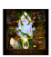
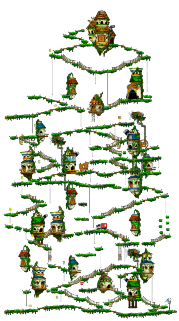
魔法森林 入口位置 在「魔法森林」走到魔法森林最上方的傳送點 → 「魔法森林圖書館」 特殊入口
卡伊琳
這張地圖沒有小地圖可以顯示。
這張地圖的走法目前沒有資料（多半是任務中才進得去的特殊房間）。
這張地圖沒有小地圖可以顯示。
- 在「鯨魚號碼頭」走到下方中間的傳送點 → 「中央走廊」
- 在「中央走廊」走到最上面的傳送點 → 「上層走廊」
- 在「上層走廊」走到左下方的傳送點 → 「航海室」
武術教練
這張地圖沒有小地圖可以顯示。
- 在「勇士之村」走到右上方的傳送點 → 「勇士聖殿」
赫麗娜
這張地圖沒有小地圖可以顯示。
- 在「弓箭手村」走到正中間的傳送點 → 「邱比特公園」
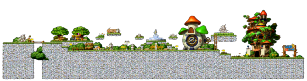
邱比特公園 入口位置 在「邱比特公園」走到邱比特公園最右邊的傳送點 → 「弓箭手培訓中心」 特殊入口
達克魯
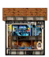
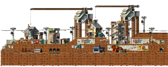
墮落城市 入口位置 在「墮落城市」走到右邊的傳送點 → 「墮落城市酒吧」 看不見的入口
坤
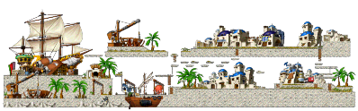
「維多利亞港」本身就是主城／中繼站，不用額外趕路。
菲歐娜
位置不明：目前沒有這個 NPC 所在地圖的資料。
← 回任務清單蘑菇國王
位置不明：目前沒有這個 NPC 所在地圖的資料。
← 回任務清單警衛隊長
位置不明：目前沒有這個 NPC 所在地圖的資料。
← 回任務清單盲俠
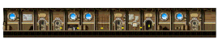
- 在「鯨魚號碼頭」走到下方中間的傳送點 → 「中央走廊」
- 在「中央走廊」走到最上面的傳送點 → 「上層走廊」
義安
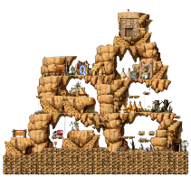
「勇士之村」本身就是主城／中繼站，不用額外趕路。
布魯斯
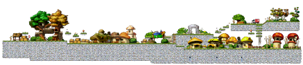
「弓箭手村」本身就是主城／中繼站，不用額外趕路。
貝恩
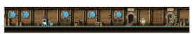
- 在「鯨魚號碼頭」走到下方中間的傳送點 → 「中央走廊」
- 在「中央走廊」走到最下面的傳送點 → 「下層走廊」
巴爾特
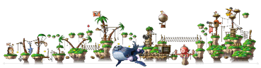
「鯨魚號碼頭」本身就是主城／中繼站，不用額外趕路。
湯寶寶
這張地圖沒有小地圖可以顯示。
- 在「鯨魚號碼頭」走到下方中間的傳送點 → 「中央走廊」
- 在「中央走廊」走到最上面的傳送點 → 「上層走廊」
- 在「上層走廊」走到下方中間的傳送點 → 「餐廳」
內拉
「墮落城市」本身就是主城／中繼站，不用額外趕路。
瑪亞
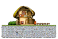
- 在「弓箭手村」走到右下方的傳送點 → 「弓箭手村民宅」
特奧
「維多利亞港」本身就是主城／中繼站，不用額外趕路。
索非亞
這張地圖沒有小地圖可以顯示。
- 在「勇士之村」走到正中間的傳送點 → 「勇士之村雜貨店」
麥吉
「勇士之村」本身就是主城／中繼站，不用額外趕路。
克利斯拉瑪
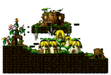
「奇幻村」本身就是主城／中繼站，不用額外趕路。
溫斯頓
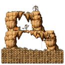
- 在「勇士之村」走到最右邊的傳送點 → 「勇士之村東入口」
- 在「勇士之村東入口」走到最右邊的傳送點 → 「東方岩石山Ⅰ」
- 在「東方岩石山Ⅰ」走到左上方的傳送點 → 「東方岩石山Ⅱ」
蓓蒂
「魔法森林」本身就是主城／中繼站，不用額外趕路。
小安
- 在「弓箭手村」走到最右邊的傳送點 → 「弓箭手村東部小山」
阿勒斯
「墮落城市」本身就是主城／中繼站，不用額外趕路。
長老斯坦
「弓箭手村」本身就是主城／中繼站，不用額外趕路。
明明夫人
「弓箭手村」本身就是主城／中繼站，不用額外趕路。
艾斯達
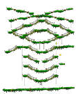
- 在「魔法森林」走到最左邊的傳送點 → 「魔法森林南郊」
神秘的女孩
這張地圖沒有小地圖可以顯示。
墮落城市 入口位置 在「墮落城市」走到正中間的傳送點 → 「墮落城市醫院」 看不見的入口
泰實夫
這張地圖沒有小地圖可以顯示。
這張地圖的走法目前沒有資料（多半是任務中才進得去的特殊房間）。
洛尼
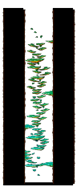
- 在「魔法森林」走到最上面的傳送點 → 「魔法森林北郊」
- 在「魔法森林北郊」走到最左邊的傳送點 → 「大木林Ⅰ」
- 在「大木林Ⅰ」走到最左邊的傳送點 → 「魔法森林北部」
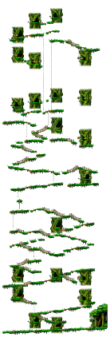
魔法森林北部 入口位置 在「魔法森林北部」走到下方中間的傳送點 → 「北部森林通道」 看不見的入口
麗娜
「弓箭手村」本身就是主城／中繼站，不用額外趕路。
妖精 羅雯
「魔法森林」本身就是主城／中繼站，不用額外趕路。
黑巴克
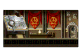
- 在「鯨魚號碼頭」走到下方中間的傳送點 → 「中央走廊」
- 在「中央走廊」走到下方中間的傳送點 → 「會議室」
酋長
「勇士之村」本身就是主城／中繼站，不用額外趕路。
珍
「維多利亞港」本身就是主城／中繼站，不用額外趕路。
伊卡路斯
「墮落城市」本身就是主城／中繼站，不用額外趕路。
妖精維英
「魔法森林」本身就是主城／中繼站，不用額外趕路。
無意義存在者
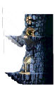
- 在「奇幻村」走到最右邊的傳送點 → 「螞蟻洞Ⅰ」
- 在「螞蟻洞Ⅰ」走到最右邊的傳送點 → 「螞蟻洞Ⅱ」
- 在「螞蟻洞Ⅱ」走到最右邊的傳送點 → 「螞蟻洞Ⅲ」
- 在「螞蟻洞Ⅲ」走到最右邊的傳送點 → 「螞蟻洞Ⅳ」
- 在「螞蟻洞Ⅳ」走到最右邊的傳送點 → 「黑暗通道」
- 在「黑暗通道」走到最右邊的傳送點 → 「蝙蝠洞」
- 在「蝙蝠洞」走到最右邊的傳送點 → 「幽深螞蟻洞Ⅰ」
- 在「幽深螞蟻洞Ⅰ」走到最右邊的傳送點 → 「幽深螞蟻洞Ⅱ」
- 在「幽深螞蟻洞Ⅱ」走到最右邊的傳送點 → 「螞蟻礦坑」
- 在「螞蟻礦坑」走到最下面的傳送點 → 「火獨眼獸洞穴I」
- 在「火獨眼獸洞穴I」走到最下面的傳送點 → 「火獨眼獸洞穴II」
- 在「火獨眼獸洞穴II」走到最下面的傳送點 → 「火獨眼獸洞穴III」
- 在「火獨眼獸洞穴III」走到最下面的傳送點 → 「火獨眼獸洞穴IV」
- 在「火獨眼獸洞穴IV」走到最右邊的傳送點 → 「龍族狩獵場」
- 在「龍族狩獵場」走到最右邊的傳送點 → 「冰獨眼獸洞穴Ⅰ」
- 在「冰獨眼獸洞穴Ⅰ」走到最右邊的傳送點 → 「冰獨眼獸洞穴Ⅱ」
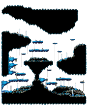
冰獨眼獸洞穴Ⅱ 入口位置 在「冰獨眼獸洞穴Ⅱ」走到最右邊的傳送點 → 「另外的入口」 看不見的入口
妖精 艾溫
「魔法森林」本身就是主城／中繼站，不用額外趕路。
潘喜
- 在「魔法森林」走到最上面的傳送點 → 「魔法森林北郊」
- 在「魔法森林北郊」走到最左邊的傳送點 → 「大木林Ⅰ」
- 在「大木林Ⅰ」走到最左邊的傳送點 → 「魔法森林北部」
利普

這張地圖的走法目前沒有資料（多半是任務中才進得去的特殊房間）。
利普
這張地圖的走法目前沒有資料（多半是任務中才進得去的特殊房間）。
麗爾
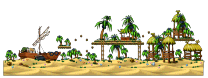
這張地圖的走法目前沒有資料（多半是任務中才進得去的特殊房間）。
露爾
這張地圖的走法目前沒有資料（多半是任務中才進得去的特殊房間）。
拉爾
這張地圖的走法目前沒有資料（多半是任務中才進得去的特殊房間）。
皮亞
- 在「弓箭手村」走到正中間的傳送點 → 「邱比特公園」
後街吉姆
「墮落城市」本身就是主城／中繼站，不用額外趕路。
倒下的垃圾桶
這張地圖沒有小地圖可以顯示。
墮落城市 入口位置 在「墮落城市」走到左下方的傳送點 → 「沼澤地Ⅰ」戰火之地 看不見的入口- 在「沼澤地Ⅰ」走到最右邊的傳送點 → 「沼澤地Ⅱ」
- 在「沼澤地Ⅱ」走到最右邊的傳送點 → 「沼澤地Ⅲ」
- 在「沼澤地Ⅲ」走到最右邊的傳送點 → 「鱷魚潭Ⅰ」
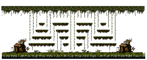
鱷魚潭Ⅰ 入口位置 在「鱷魚潭Ⅰ」走到右下方的傳送點 → 「沼地小屋」隱藏地圖 看不見的入口
權達開
「墮落城市」本身就是主城／中繼站，不用額外趕路。
休咪
「墮落城市」本身就是主城／中繼站，不用額外趕路。
地鐵站 服務員
這張地圖沒有小地圖可以顯示。
- 在「墮落城市」走到下方中間的傳送點 → 「地鐵售票處」墮落城市地鐵
拉克里斯
「墮落城市」本身就是主城／中繼站，不用額外趕路。
綠菇菇懸賞標示牌
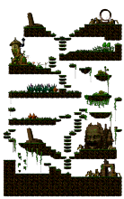
- 在「奇幻村」走到最左邊的傳送點 → 「黑森林通道」
- 在「黑森林通道」走到最上面的傳送點 → 「黑森林」
記憶者
「奇幻村」本身就是主城／中繼站，不用額外趕路。
刺菇菇懸賞標示牌
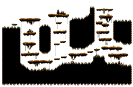
- 在「奇幻村」走到最右邊的傳送點 → 「螞蟻洞Ⅰ」
- 在「螞蟻洞Ⅰ」走到最右邊的傳送點 → 「螞蟻洞Ⅱ」
- 在「螞蟻洞Ⅱ」走到最右邊的傳送點 → 「螞蟻洞Ⅲ」
殭屍菇菇懸賞標示牌
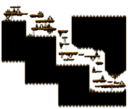
- 在「奇幻村」走到最右邊的傳送點 → 「螞蟻洞Ⅰ」
- 在「螞蟻洞Ⅰ」走到最右邊的傳送點 → 「螞蟻洞Ⅱ」
- 在「螞蟻洞Ⅱ」走到最右邊的傳送點 → 「螞蟻洞Ⅲ」
- 在「螞蟻洞Ⅲ」走到最右邊的傳送點 → 「螞蟻洞Ⅳ」
達利額
位置不明：目前沒有這個 NPC 所在地圖的資料。
← 回任務清單約翰
「維多利亞港」本身就是主城／中繼站，不用額外趕路。
魯克
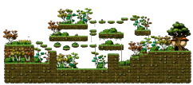
- 在「弓箭手村」走到最右邊的傳送點 → 「迷宮通道」戰火之地
- 在「迷宮通道」走到最右邊的傳送點 → 「弓箭手村迷宮入口」
巴勒圖
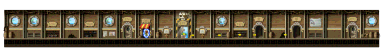
- 在「鯨魚號碼頭」走到下方中間的傳送點 → 「中央走廊」
瞌睡蟲
- 在「鯨魚號碼頭」走到下方中間的傳送點 → 「中央走廊」
薩比特拉瑪
「奇幻村」本身就是主城／中繼站，不用額外趕路。
火獨眼獸懸賞標示牌
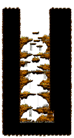
- 在「奇幻村」走到最右邊的傳送點 → 「螞蟻洞Ⅰ」
- 在「螞蟻洞Ⅰ」走到最右邊的傳送點 → 「螞蟻洞Ⅱ」
- 在「螞蟻洞Ⅱ」走到最右邊的傳送點 → 「螞蟻洞Ⅲ」
- 在「螞蟻洞Ⅲ」走到最右邊的傳送點 → 「螞蟻洞Ⅳ」
- 在「螞蟻洞Ⅳ」走到最右邊的傳送點 → 「黑暗通道」
- 在「黑暗通道」走到最右邊的傳送點 → 「蝙蝠洞」
- 在「蝙蝠洞」走到最右邊的傳送點 → 「幽深螞蟻洞Ⅰ」
- 在「幽深螞蟻洞Ⅰ」走到最右邊的傳送點 → 「幽深螞蟻洞Ⅱ」
- 在「幽深螞蟻洞Ⅱ」走到最右邊的傳送點 → 「螞蟻礦坑」
- 在「螞蟻礦坑」走到最下面的傳送點 → 「火獨眼獸洞穴I」
妖精 瑪麗
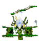
- 在「魔法森林」走到右下方的傳送點 → 「生命之林」隱密之地
廢棄的古書
位置不明：目前沒有這個 NPC 所在地圖的資料。
← 回任務清單百京
「維多利亞港」本身就是主城／中繼站，不用額外趕路。
卡蜜拉
「弓箭手村」本身就是主城／中繼站，不用額外趕路。
散落的灰燼
位置不明：目前沒有這個 NPC 所在地圖的資料。
← 回任務清單散落的灰燼
位置不明：目前沒有這個 NPC 所在地圖的資料。
← 回任務清單愛得溫
位置不明：目前沒有這個 NPC 所在地圖的資料。
← 回任務清單漢斯
位置不明：目前沒有這個 NPC 所在地圖的資料。
← 回任務清單樹木大神
位置不明：目前沒有這個 NPC 所在地圖的資料。
← 回任務清單魔法大神
位置不明：目前沒有這個 NPC 所在地圖的資料。
← 回任務清單思卡斯
位置不明：目前沒有這個 NPC 所在地圖的資料。
← 回任務清單詹姆士
位置不明：目前沒有這個 NPC 所在地圖的資料。
← 回任務清單風獨眼獸懸賞標示牌
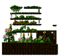
- 在「奇幻村」走到最左邊的傳送點 → 「黑森林通道」
- 在「黑森林通道」走到最下面的傳送點 → 「黑森林狩獵場I」
- 在「黑森林狩獵場I」走到最右邊的傳送點 → 「黑森林狩獵場II」
遺跡發掘隊佈告欄
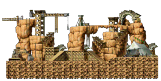
- 在「魔法森林」走到最上面的傳送點 → 「魔法森林北郊」
- 在「魔法森林北郊」走到最左邊的傳送點 → 「大木林Ⅰ」
- 在「大木林Ⅰ」走到最左邊的傳送點 → 「魔法森林北部」
- 在「魔法森林北部」走到最上面的傳送點 → 「勇士之村東部」
- 在「勇士之村東部」走到最左邊的傳送點 → 「岩石路Ⅲ」
- 在「岩石路Ⅲ」走到最右邊的傳送點 → 「遺跡發掘地Ⅰ」
- 在「遺跡發掘地Ⅰ」走到最右邊的傳送點 → 「遺跡發掘地Ⅱ」
- 在「遺跡發掘地Ⅱ」走到最右邊的傳送點 → 「遺跡發掘地Ⅲ」
- 在「遺跡發掘地Ⅲ」走到右上方的傳送點 → 「遺跡發掘隊營地」
杉峰
- 在「魔法森林」走到最上面的傳送點 → 「魔法森林北郊」
- 在「魔法森林北郊」走到最左邊的傳送點 → 「大木林Ⅰ」
- 在「大木林Ⅰ」走到最左邊的傳送點 → 「魔法森林北部」
- 在「魔法森林北部」走到最上面的傳送點 → 「勇士之村東部」
- 在「勇士之村東部」走到最左邊的傳送點 → 「岩石路Ⅲ」
- 在「岩石路Ⅲ」走到最右邊的傳送點 → 「遺跡發掘地Ⅰ」
- 在「遺跡發掘地Ⅰ」走到最右邊的傳送點 → 「遺跡發掘地Ⅱ」
- 在「遺跡發掘地Ⅱ」走到最右邊的傳送點 → 「遺跡發掘地Ⅲ」
- 在「遺跡發掘地Ⅲ」走到右上方的傳送點 → 「遺跡發掘隊營地」
羅密歐
位置不明：目前沒有這個 NPC 所在地圖的資料。
← 回任務清單茱麗葉
位置不明：目前沒有這個 NPC 所在地圖的資料。
← 回任務清單西琳
位置不明：目前沒有這個 NPC 所在地圖的資料。
← 回任務清單仲介商
位置不明：目前沒有這個 NPC 所在地圖的資料。
← 回任務清單慕尼
這張地圖的走法目前沒有資料（多半是任務中才進得去的特殊房間）。
琪妮
位置不明：目前沒有這個 NPC 所在地圖的資料。
← 回任務清單猶利塔
位置不明：目前沒有這個 NPC 所在地圖的資料。
← 回任務清單克魯特
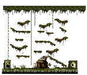
這張地圖的走法目前沒有資料（多半是任務中才進得去的特殊房間）。
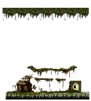
這張地圖的走法目前沒有資料（多半是任務中才進得去的特殊房間）。
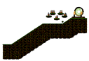
這張地圖的走法目前沒有資料（多半是任務中才進得去的特殊房間）。
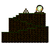
這張地圖的走法目前沒有資料（多半是任務中才進得去的特殊房間）。
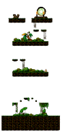
這張地圖的走法目前沒有資料（多半是任務中才進得去的特殊房間）。
黃船長
位置不明：目前沒有這個 NPC 所在地圖的資料。
← 回任務清單